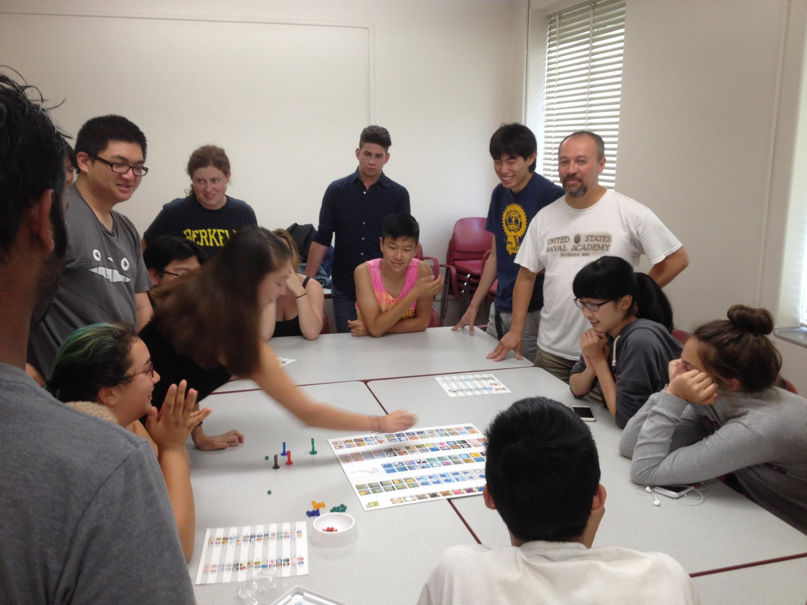

 Welcome to the Society of Linguistics Undergraduate Students, or SLUgS for short! We are UC Berkeley's official student linguistics society, and we're glad you've made your way to our website. Revived in 2005 by the by the now-renowned linguist David J. Peterson, this organization hosts the brightest young minds of the linguistic world in a colloquium that facilitates open, rapid learning. With amazing activities such as monolingual elicitation and tourings of the Phonology Lab, our members can have hands-on experience that can benefit them as an early introduction to linguistic field work. A collection of widely recognized and respected linguists are come every semester to educate our members on all facets of the field: Conlanging, translation, and research. Find us every Thursday at 5PM in 1229 Dwinelle!